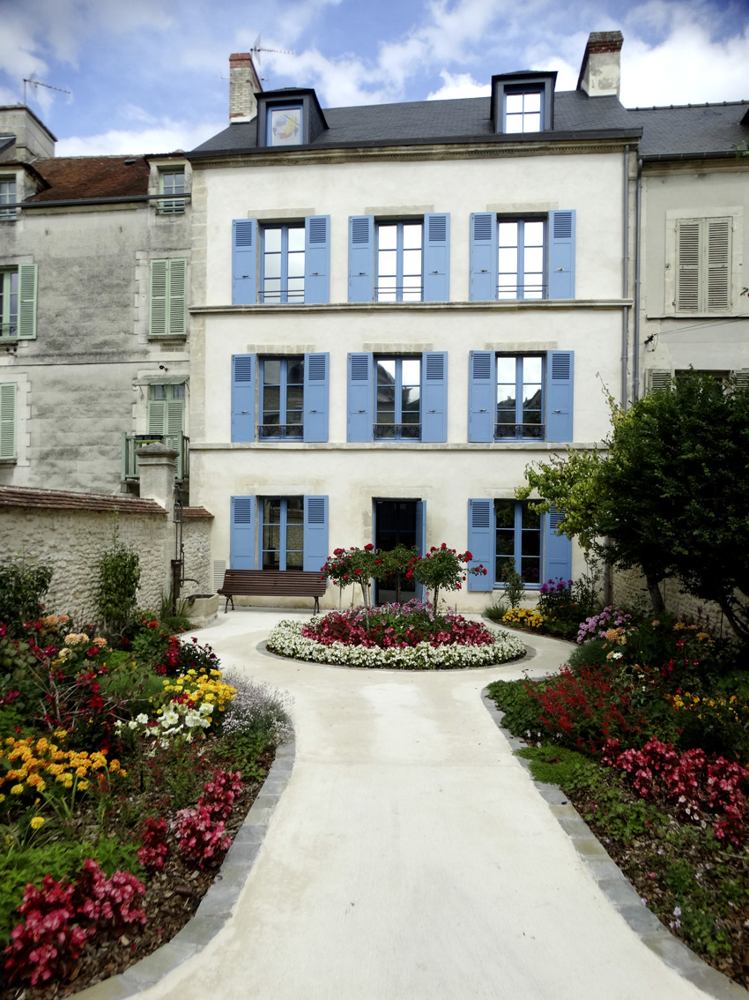

Musée Fernand Léger – André Mare : collections, horaires et tarifs 2026
Dans cette fiche
L’essentiel pour visiter
Dans la maison d'enfance de Fernand Léger à Argentan, le musée retrace les parcours de deux figures majeures du XXe siècle, entre peinture moderne, cubisme et Art déco. En octobre 2026, il ouvre du mardi au dimanche de 13 h 30 à 17 h. Dernier jour de la saison le 1er novembre 2026, gratuit pour tous.


ARGENTAN
Un musée consacré à deux artistes nés à Argentan
Le musée Fernand Léger – André Mare raconte le parcours de deux artistes originaires d'Argentan, dont les trajectoires se croisent dans le Paris des avant-gardes. Fernand Léger (1881–1955) développe un langage pictural construit autour de formes, de rythmes et de couleurs. André Mare (1885–1932) s'illustre comme peintre, décorateur et figure de l'Art déco. L'établissement les présente ensemble, sans réduire leurs œuvres à un courant identique : chacun développe son vocabulaire, ses collaborations et ses usages de l'image.
La maison d'enfance de Fernand Léger comme point de départ
Installé au 6 rue de l'Hôtel de Ville, le musée prend place dans la maison d'enfance de Fernand Léger. La muséographie fait dialoguer les premières années des artistes à Argentan avec leurs carrières et les mouvements artistiques du XXe siècle. Le lieu évoque notamment Les Constructeurs, œuvre emblématique de Léger, dans son dispositif architectural et visuel. La maison actuelle est un espace d'interprétation, non un atelier d'artiste demeuré inchangé depuis la jeunesse du peintre.
Cubisme, modernité et fascination pour la ville
La peinture de Léger transforme la représentation du corps, de l'architecture et de la machine. Les lignes, volumes colorés et compositions rythmées proposent une manière de traduire l'expérience du monde moderne. Le musée explique ses recherches sans faire du cubisme une recette unique : les positions des artistes et les choix d'œuvres changent selon les périodes. Les supports numériques et les rapprochements iconographiques aident les visiteurs à observer plutôt qu'à seulement mémoriser des noms de courants.
André Mare, du dessin à l'Art déco
André Mare conjugue dessin, peinture, aménagement intérieur et projets de décoration. Son parcours éclaire les échanges entre arts décoratifs et arts plastiques, dans une époque où les artistes collaborent avec des éditeurs, fabricants et architectes. Des objets liés à la Compagnie des Arts Français et aux créateurs associés donnent à voir la pluralité des supports. Le style Art déco ne se résume pas à quelques motifs géométriques : il s'exprime aussi dans l'organisation des formes, les matériaux et la relation entre objet et espace.
Correspondances et dialogue entre les deux artistes
Des dispositifs sonores permettent d'écouter des lectures de correspondances historiques. Un film animé et plusieurs tables numériques reviennent sur l'amitié, les influences réciproques et les différences entre les deux parcours. Ces présentations mettent à disposition des clés de compréhension ; elles ne doivent pas être prises pour une restitution exhaustive de la correspondance des artistes. Cette approche intéresse aussi ceux qui découvrent l'art moderne, parce qu'elle montre des personnes, des milieux et des discussions derrière les œuvres.
Peintures, dessins, lithographies et documents d'archives
Les collections comprennent peintures, dessins, photographies, lithographies originales, livres illustrés et objets décoratifs. Les acquisitions et dons ont enrichi un ensemble relativement jeune, auquel s'ajoutent des prêts d'institutions, de collectionneurs et d'ayants droit. Des œuvres de proches et collaborateurs — parmi lesquels Blaise Cendrars, Marie Laurencin, Louis Süe ou André Dunoyer de Segonzac — permettent de resituer le réseau des artistes. Une œuvre mentionnée dans l'histoire du musée n'est pas nécessairement visible en permanence : les accrochages et prêts peuvent varier.
Horaires d'octobre et fermeture hivernale 2026
Le calendrier officiel 2026 fixe l'ouverture en octobre du mardi au dimanche de 13 h 30 à 17 h, avec dernière entrée trente minutes avant la fermeture, soit 16 h 30. Le lundi est fermé. La saison pour les individuels se termine le dimanche 1er novembre 2026, journée de gratuité annoncée par la ville d'Argentan. L'établissement ferme ensuite pour l'hiver et annonce une réouverture en février 2027. Les groupes peuvent solliciter des visites sur réservation hors de la saison régulière.
Billets et gratuités
Le plein tarif est de 5,50 €, et le tarif réduit de 3,50 € pour les catégories éligibles, notamment étudiants, demandeurs d'emploi et personnes en situation de handicap, sur présentation d'un justificatif. L'entrée est gratuite pour les moins de douze ans. La gratuité du premier dimanche du mois s'applique notamment au dimanche 1er novembre 2026. Les groupes d'au moins dix personnes réservent à l'avance ; la visite libre en groupe est annoncée à 3,50 € par personne, avec un supplément pour la visite commentée. Les ateliers sont soumis à leurs propres conditions.
Accès en centre-ville et services
Le musée se trouve au 6 rue de l'Hôtel de Ville, 61200 Argentan, à une dizaine de minutes à pied de la gare. Le parking du Champ de Foire, à environ 230 mètres, est gratuit, sous réserve d'occupation lors d'événements. L'établissement est accessible aux personnes à mobilité réduite. Une boutique, des équipements pour les jeunes visiteurs et des activités de médiation complètent le parcours. Téléphone : 02 33 16 55 97 ; courriel : musee-leger-mare@argentan.fr.
D'autres musées d'art et de patrimoine en Normandie
La visite est complémentaire de celle du musée des Beaux-Arts de Caen, dont les collections couvrent une chronologie plus large, et du musée Blanche Hoschedé-Monet à Vernon, associé aux paysages et à l'impressionnisme. Pour le patrimoine textile, le musée des Beaux-Arts et de la Dentelle d'Alençon reste une autre option dans l'Orne. Attention : la Maison des Dentelles d'Argentan, établissement distinct, annonce une fermeture définitive, même si des expositions hors les murs peuvent se poursuivre. Voir les musées de Normandie et l'annuaire national.